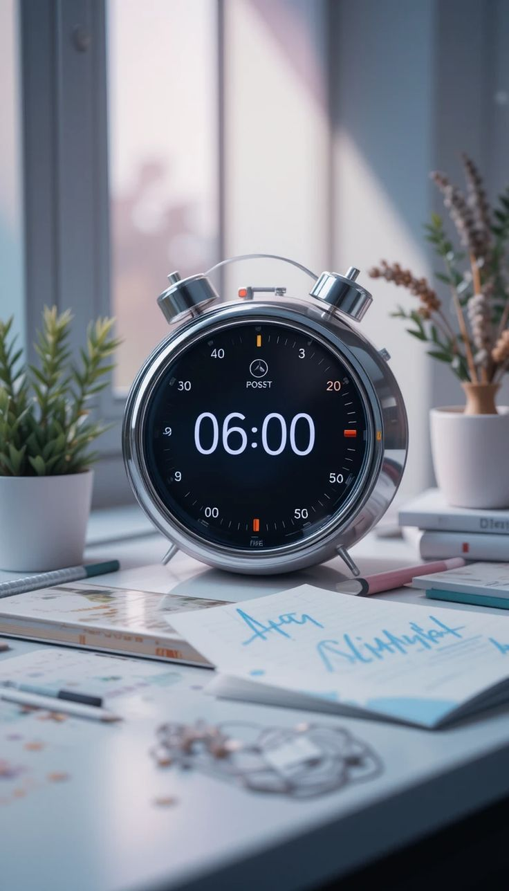

Time Management: Every Moment Counts
Time is a gift — a precious treasure given to us by Allah. Each second that passes is a part of our life that we will never get back.
In a world running at full speed, where everyone is busy yet achieving little, time has become the most wasted resource.
People complain, "I don’t have time!" yet spend hours lost in a social media scroll. They say, "I’ll do it later," while "later" never arrives. They believe, "I’m too busy," yet their days slip away in distractions, meaningless conversations, and tasks that bring no real fulfillment.
Look around. Everyone is doing something, but very few are actually building something.
Where Is This Era Heading?
We are in an age where people wake up to notifications before they say Alhamdulillah. An era where conversations have shifted from deep reflections to “Did you see that trend?” A time where everyone is chasing money, validation, and success—but at the cost of peace, family, and faith.
We’ve traded our free time for mindless entertainment. Our ambitions for temporary pleasures. And then we wonder, Why do I feel so empty?
YouTube short, a trending reel, or a meaningless conversation steals an hour from your life—you don’t even notice and that’s the fact.
The Illusion of "Being Busy"
Society glorifies being “busy.” If you’re not constantly working, hustling, or occupied, you’re seen as unproductive. But busyness does not mean progress. A hamster runs endlessly on a wheel—yet it goes nowhere. Many people today are just like that—running fast but reaching nothing.
True success isn’t in being busy. It’s in being intentional. Make every moment count—before it runs out. One day, our names will be written in past tense. The to-do lists, the notifications, the meetings—none of it will matter. Only one question will remain: How did we spend our time?